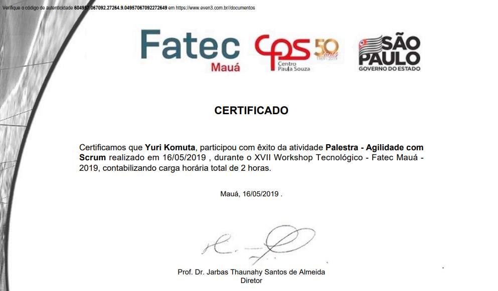
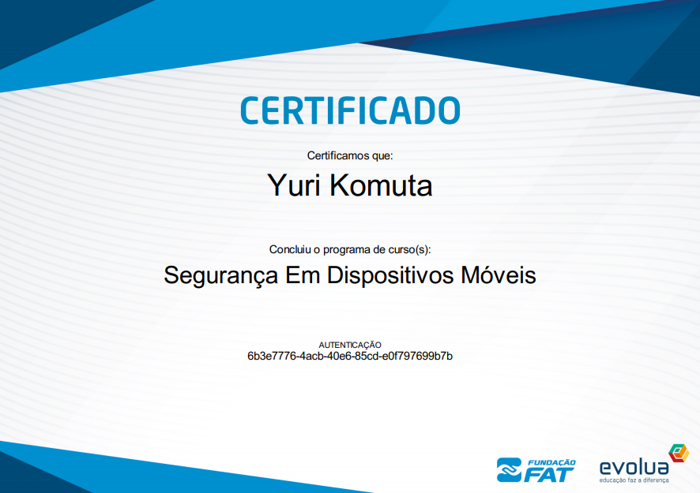
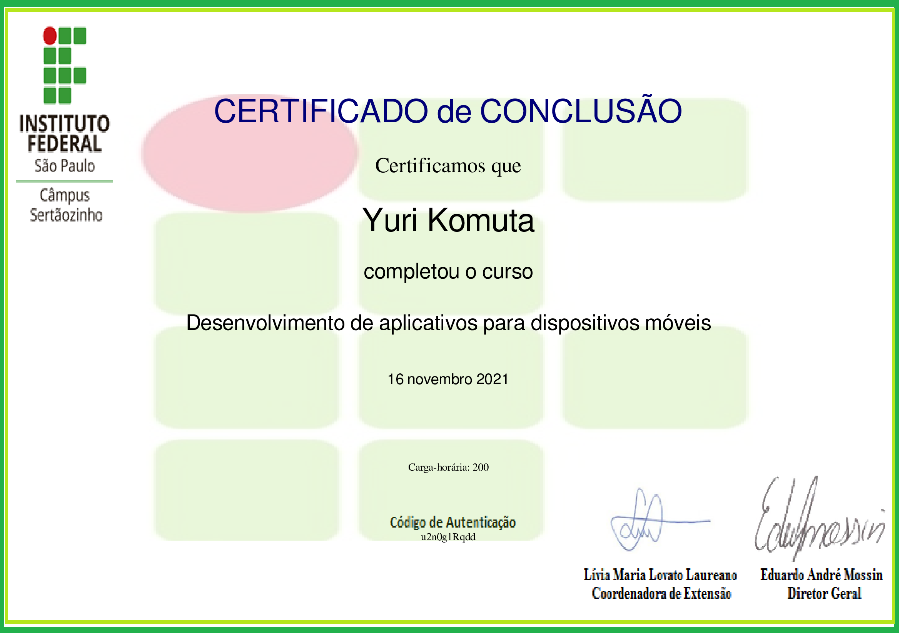
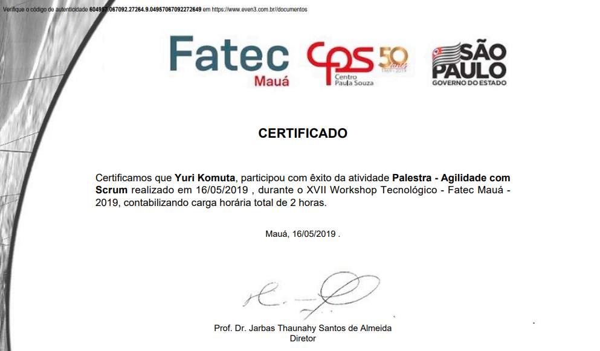
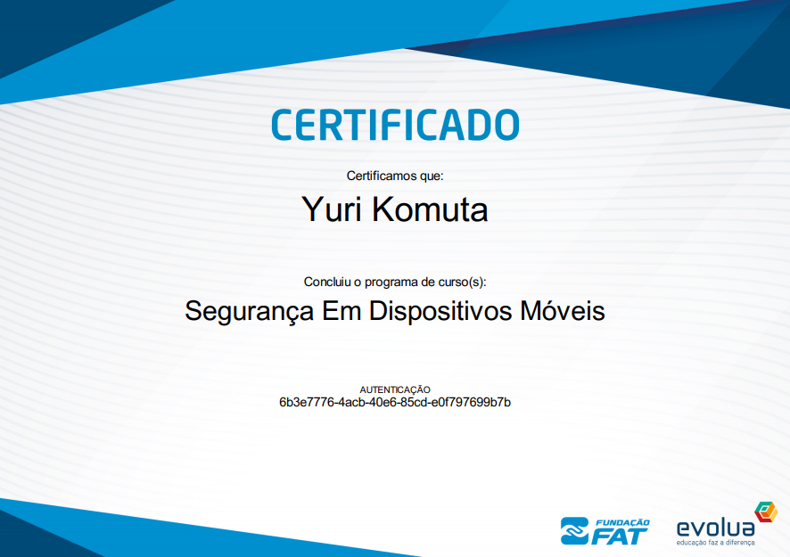
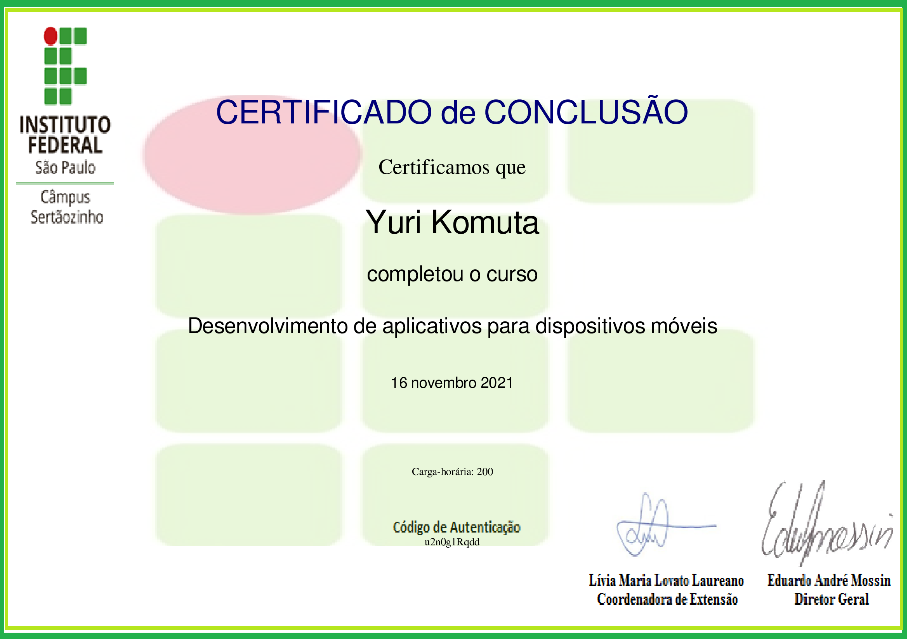

Sobre Mim

Aceita um café?
Eu sou a Yuri Komuta, graduada (2017-2020) em Informática Para Negócios pela Fatec Mauá, o que me possibilitou ser também desenvolvedora de web,consultora de ti, instrutora e mentora de programação.
Em 2011 já atuava como Social Media em SP, desde de lá veio adicionando experiências e novos conhecimentos ao meu perfil profissional.
Mergulhei na tecnologia quando participei de um projeto de mentoria de um grupo de tecnologia para mulheres no Facebook chamado Elas Programam, logo eu que sempre achei que nunca poderia ser capaz de escrever uma linha de código.
A história não ficou por aí, participei de um curso de formação de Frontend por outra iniciativa de inserir mais mulheres na tecnologia, dessa vez Programaria isso lá em 2018.
Faço parte da comunidade Compiladoras de Cafeína onde ensinamos mulheres a programar.
Atuei por mais de 4 anos na prevenção e detecção a fraudes comerciais.
Desde então sigo estudando atuando em diversas aéreas de negócios e tecnologia.
Sempre disponível para novos negócios.Contato.Uma apaixonada pelo mundo da tecnologia e café ✌💁.
Certificações
.png) 






Serviços
1 Social Media
Atuando desde de 2011 com criação de conteúdo, performace (Google Ads / Facebook Ads), backstage Youtuber, engajamento orgânico mídias sociais.
2 Programação e Robótica
Aulas de lógica de programação (Construct/Scratch/Dash & Dot/App Inventor), Robótica (Arduino e Microbit), Desenvolvimento Web e Software (Python/Js/Html5 & Css3).
3 Consultoria De TI
Atendimento para ouvir e compreender as necessidades de um cliente na demanda da informática.Buscando oferecer as soluções que seja eficientes e eficazes para as demandas do negócio.